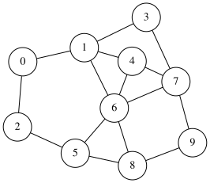
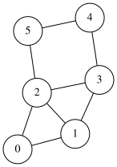
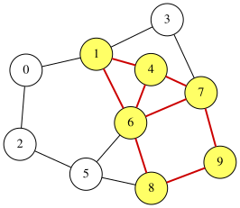

Subgraph Isomorphism Problem
Given two undirected graphs $G_H=(V_H,E_H)$ (the host graph) and $G_G=(V_G,E_G)$ (the guest graph), the subgraph isomorphism problem asks whether $G_H$ contains a subgraph that is isomorphic to $G_G$.
More formally, the goal is to find an injective mapping $\sigma:V_G\rightarrow V_H$ such that, for every edge $(u,v)\in E_G$, the pair $(\sigma(u),\sigma(v))$ is also an edge of the host graph, i.e., $(\sigma(u),\sigma(v))\in E_H$.
For example, consider the following host and guest graphs:

An example of the host graph $G_H=(V_H,E_H)$ with 10 nodes

An example of the guest graph $G_G=(V_G,E_G)$ with 6 nodes
One solution $\sigma$ is:
| node $i$ in $G_G$ | 0 | 1 | 2 | 3 | 4 | 5 |
|---|---|---|---|---|---|---|
| node $\sigma(i)$ in $G_H$ | 1 | 4 | 6 | 7 | 9 | 8 |
This solution is visualized as follows:

A solution to the subgraph isomorphism problem
QUBO formulation of the subgraph isomorphic problem
Assume that the guest graph $G_G=(V_G,E_G)$ has $m$ nodes labeled $0, 1, \ldots m-1$, and and the host graph $G_H=(V_H,E_H) $ has $n$ nodes labeled $0, 1, \ldots n-1$. We introduce an $m\times n$ binary matrix $X=(x_{i,j})$ ($0\leq i\leq m-1, 0\leq j\leq n-1$) with $mn$ binary variables. This matrix represents an injective mapping $\sigma:V_G\rightarrow V_H$ such that $x_{i,j}=1$ if and only if $\sigma(i)=j$.
For example, the solution of the subgraph isomorphism problem can be represented by the following $6\times 10$ binary matrix:
| $i$ | $\sigma(i)$ | 0 | 1 | 2 | 3 | 4 | 5 | 6 | 7 | 8 | 9 |
|---|---|---|---|---|---|---|---|---|---|---|---|
| 0 | 1 | 0 | 1 | 0 | 0 | 0 | 0 | 0 | 0 | 0 | 0 |
| 1 | 4 | 0 | 0 | 0 | 0 | 1 | 0 | 0 | 0 | 0 | 0 |
| 2 | 6 | 0 | 0 | 0 | 0 | 0 | 0 | 1 | 0 | 0 | 0 |
| 3 | 7 | 0 | 0 | 0 | 0 | 0 | 0 | 0 | 1 | 0 | 0 |
| 4 | 9 | 0 | 0 | 0 | 0 | 0 | 0 | 0 | 0 | 0 | 1 |
| 5 | 8 | 0 | 0 | 0 | 0 | 0 | 0 | 0 | 0 | 1 | 0 |
Because $X$ represents an injective mapping, it must satisfy the following constraints:
- Row constraint: Each guest node is mapped to exactly one host node, i.e., the sum of each row is 1.
- Column constraint: Each host node is used by at most one guest node, i.e., the sum of each column is 0 or 1.
These can be combined into the following QUBO++-style constraint, which attains its minimum value when all constraints are satisfied:
\[\begin{aligned} \text{constraint} &= \sum_{i=0}^{m-1}\Bigl(\sum_{j=0}^{n-1}x_{i,j} = 1\Bigr)+\sum_{j=0}^{m-1}\Bigl(0\leq \sum_{i=0}^{n-1}x_{i,j} \leq 1\Bigr) \end{aligned}\]In QUBO form, we can express the same constraints as:
\[\begin{aligned} \text{constraint} &= \sum_{i=0}^{m-1}\Bigl(\sum_{j=0}^{n-1}x_{i,j} - 1\Bigr)^2+\sum_{j=0}^{m-1}\sum_{i=0}^{n-1}x_{i,j}\Bigl(\sum_{i=0}^{n-1}x_{i,j}-1\Bigr) \end{aligned}\]Next, we define the objective as the number of guest edges that are mapped to host edges:
\[\begin{aligned} \text{objective} &= \sum_{(u_G,v_G)\in E_G}\sum_{(u_H,v_H)\in E_H} (x_{u_G,u_H}x_{v_G,v_H}+x_{u_G,v_H}x_{v_G,u_H}) \end{aligned}\]Here, an undirected guest edge $(u_G,v_G)\in E_G$ can correspond to a host edge $(u_H,v_H)\in E_H$ in two symmetric ways:
- $(u_G, v_G)\mapsto (u_H,v_H)$
- $(u_G, v_G)\mapsto (v_H,u_H)$
Therefore, we include both quadratic terms $x_{u_G,u_H}x_{v_G,v_H}$ and $x_{u_G,v_H}x_{v_G,u_H}$.
Finally, we combine the objective and the constraint into a single QUBO expression:
\[\begin{aligned} f &= -\text{objective} + mn\times \text{constraint} \end{aligned}\]The penalty coefficient $mn$ is chosen so that satisfying the constraints is prioritized over improving the objective. The best possible value of $f$ is attained when the constraint term is zero and the objective equals the number of guest edges.
QUBO++ program of the subgraph isomorphic problem
Based on the QUBO formulation above, the following QUBO++ program solves the subgraph isomorphism problem for a guest graph with $M=6$ nodes and a host graph with $N=10$ nodes:
#define MAXDEG 2
#include <qbpp/qbpp.hpp>
#include <qbpp/easy_solver.hpp>
#include <qbpp/graph.hpp>
int main() {
const size_t N = 10;
std::vector<std::pair<size_t, size_t>> host = {
{0, 1}, {0, 2}, {1, 3}, {1, 4}, {1, 6}, {2, 5}, {3, 7}, {4, 6},
{4, 7}, {5, 6}, {5, 8}, {6, 8}, {6, 7}, {7, 9}, {8, 9}};
const size_t M = 6;
std::vector<std::pair<size_t, size_t>> guest = {
{0, 1}, {0, 2}, {1, 2}, {1, 3}, {2, 3}, {2, 5}, {3, 4}, {4, 5}};
auto x = qbpp::var("x", M, N);
auto host_assigned = qbpp::vector_sum(x, 0);
auto constraint = qbpp::sum(qbpp::vector_sum(x, 1) == 1) +
qbpp::sum(0 <= host_assigned <= 1);
auto objective = qbpp::toExpr(0);
for (const auto& e_g : guest) {
for (const auto& e_h : host) {
objective += x[e_g.first][e_h.first] * x[e_g.second][e_h.second] +
x[e_g.first][e_h.second] * x[e_g.second][e_h.first];
}
}
auto f = -objective + constraint * (M * N);
f.simplify_as_binary();
auto solver = qbpp::easy_solver::EasySolver(f);
solver.target_energy(-static_cast<int>(guest.size()));
auto sol = solver.search();
std::cout << "sol(x) = " << sol(x) << std::endl;
std::cout << "sol(objective) = " << sol(objective) << std::endl;
std::cout << "sol(constraint) = " << sol(constraint) << std::endl;
auto guest_to_host = qbpp::onehot_to_int(sol(x), 1);
std::cout << "guest_to_host = " << guest_to_host << std::endl;
auto host_to_guest = qbpp::onehot_to_int(sol(x), 0);
std::cout << "host_to_guest = " << host_to_guest << std::endl;
qbpp::graph::GraphDrawer guest_graph;
for (size_t i = 0; i < M; ++i) {
guest_graph.add(qbpp::graph::Node(i));
}
for (const auto& e : guest) {
guest_graph.add(qbpp::graph::Edge(e.first, e.second));
}
guest_graph.write("guest_graph.svg");
qbpp::graph::GraphDrawer host_graph;
for (size_t i = 0; i < N; ++i) {
host_graph.add(qbpp::graph::Node(i));
}
for (const auto& e : host) {
host_graph.add(qbpp::graph::Edge(e.first, e.second));
}
host_graph.write("host_graph.svg");
qbpp::graph::GraphDrawer graph;
for (size_t i = 0; i < N; ++i) {
graph.add(qbpp::graph::Node(i).color(sol(host_assigned[i])));
}
std::vector<std::vector<bool>> guest_adj(N, std::vector<bool>(N, false));
for (auto [u, v] : guest) {
guest_adj[u][v] = guest_adj[v][u] = true;
}
for (const auto& e_h : host) {
auto u = host_to_guest[e_h.first];
auto v = host_to_guest[e_h.second];
if (u != -1 && v != -1 &&
guest_adj[static_cast<size_t>(u)][static_cast<size_t>(v)]) {
graph.add(
qbpp::graph::Edge(e_h.first, e_h.second).color(1).penwidth(2.0f));
} else {
graph.add(qbpp::graph::Edge(e_h.first, e_h.second));
}
}
graph.write("subgraph_isomorphism.svg");
}
The guest and host graphs are given as the edge lists guest and host, respectively.
We define an $M\times N$ binary matrix x, and then construct the expressions constraint, objective, and f according to the formulation above.
An Easy Solver instance is created for f, and the target energy is set to
$−∣E_G|$ (the negative number of guest edges), which is the best possible value of -objective when all guest edges are mapped to host edges.
The obtained solution is stored in sol.
The values of x, objective, and constraint under sol are then printed.
Using the function qbpp::onehot_to_int(), the program also outputs the mappings from guest nodes to host nodes (guest_to_host, $\sigma$) and from host nodes to guest nodes (host_to_guest,$\sigma^{-1}$).
The guest and host graphs are saved as guest_graph.svg and host_graph.svg, respectively.
Finally, the solution is visualized in subgraph_isomorphism.svg, where the host nodes selected by the mapping and the host edges corresponding to guest edges are highlighted.
This program produces the following output:
sol(x) = {{0,1,0,0,0,0,0,0,0,0},{0,0,0,0,1,0,0,0,0,0},{0,0,0,0,0,0,1,0,0,0},{0,0,0,0,0,0,0,1,0,0},{0,0,0,0,0,0,0,0,0,1},{0,0,0,0,0,0,0,0,1,0}}
sol(objective) = 8
sol(constraint) = 0
guest_to_host = {1,4,6,7,9,8}
host_to_guest = {-1,0,-1,-1,1,-1,2,3,5,4}
The objective value equals the number of guest edges ($|E_G|=8$), and all constraints are satisfied (constraint = 0).
Therefore, the program finds an optimal solution that corresponds to a valid subgraph isomorphism.
Note that an entry of host_to_guest is -1 if the corresponding host node is not mapped from any guest node.